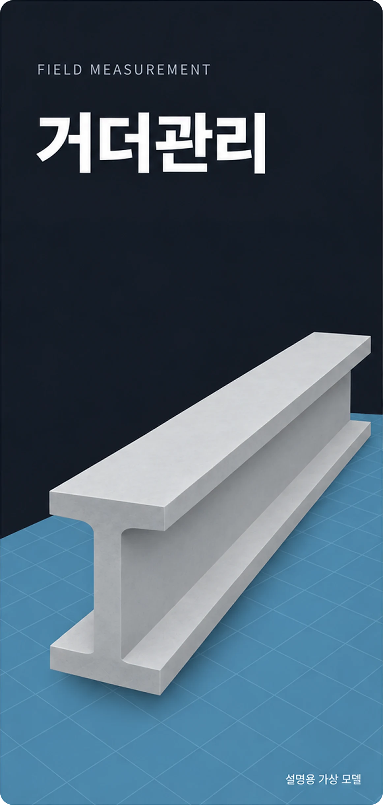
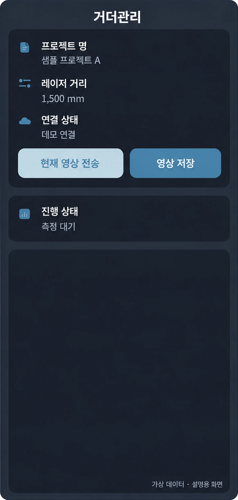

02 설계 과제
수기 기록과 재입력이 반복되는 과정에서 누락·오기 위험을 고려했습니다.
01
수기 측정·기록
측정 결과를 종이에 적고 다시 전산화해야 했습니다.
02
데이터 오류 위험
반복 입력 과정에서 누락과 오기가 발생할 가능성이 높았습니다.
03
늦은 상태 확인
분석이 끝나기 전에는 곡률 이상을 즉시 파악하기 어려웠습니다.
PROJECT 09 · B2B PLATFORM · FIELD DATA
거더의 측정값·곡률·현장 이미지를 확인하는 웹·앱 UI와 퍼블리싱을 담당했습니다. 센서 기반 수집 과정과 관리 화면을 연결하는 정보 구조를 설계했습니다. 보안을 위해 공개 이미지와 디자인을 설명용으로 재구성했으며, 가상 데이터를 사용합니다.
"현장 측정과 사무실 관리를 웹·앱으로 연결"

CASE AT A GLANCE
거더 측정·분석 과정의 정보 구조와 웹·앱 UI·퍼블리싱 결과입니다. 안전성·정확도·운영 효율의 전후 측정 결과는 포함하지 않았습니다.
01 프로젝트 배경
센서 연결, 측정값 확인, 거더별 분석 화면을 정리했습니다. 자동 수집·분석 기능을 사용하는 사람이 측정 상태와 결과를 확인하도록 웹과 모바일 UI를 설계했습니다.
02 설계 과제
측정 결과를 종이에 적고 다시 전산화해야 했습니다.
반복 입력 과정에서 누락과 오기가 발생할 가능성이 높았습니다.
분석이 끝나기 전에는 곡률 이상을 즉시 파악하기 어려웠습니다.
03 설계 결정
센서의 측정 위치와 수집 정보를 확인하는 UI를 구성했습니다.
제작·측정·분석 데이터를 거더 단위로 한곳에서 확인하도록 했습니다.
센서 연결 상태와 측정 진행을 현장에서 즉시 확인하도록 큰 조작 영역을 적용했습니다.
04 설계 화면과 흐름
설계 자료


05 업무 방식 변화
측정·분석 흐름의 UI와 퍼블리싱을 담당했습니다. 운영 효율·안전성·정확도의 전후 측정 결과는 포함하지 않았습니다.
06 회고
현장 제품의 사용성은 화면 안의 조작뿐 아니라 데이터가 생성되고 전달되는 전체 과정에서 결정된다는 점을 배웠습니다.
운영 로그를 확보한다면 수기 방식 대비 측정 완료 시간과 오류 수정 횟수를 정량화해 자동화 효과를 검증하겠습니다.